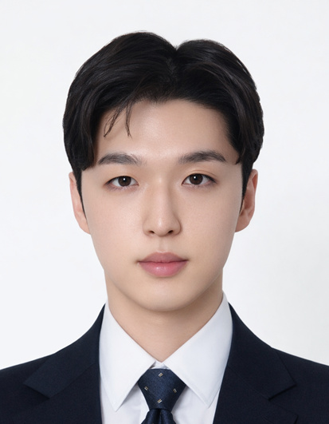

Sungwon Yang
M.S. student, KAIST · Unmanned Systems Research Group (USRG)
I work on learning-based legged locomotion and sim-to-real transfer. In the Unmanned Systems Research Group (USRG) at KAIST, advised by Prof. David Hyunchul Shim, I built the full pipeline for the Unitree Go2 quadruped on my own, from reinforcement learning in simulation to deployment on the real robot.
I received my B.S. in Computer Science from KAIST and was a research intern at the Machine Learning and Mind Lab with Prof. Sungjin Ahn. I am applying to Ph.D. programs for Fall 2027.

Research Interests
Legged locomotion, reinforcement learning, sim-to-real transfer, and real-world fine-tuning and continual adaptation of learned controllers.
Research
Climbing Stairs Without Vision
A proprioception-only policy that climbs stairs without cameras or LiDAR. It was warm-started from a TARLoco policy and fine-tuned with additional domain randomization and compliant terrain to transfer to the real robot.
Adjustable Force Response
A policy that takes a force budget along with the velocity command. With a zero budget the robot yields to an external pull; with a positive budget it pulls a load forward.
End-to-End Sim-to-Real Pipeline for the Unitree Go2
Policy training in Isaac Lab (PhysX and Newton), software-in-the-loop sim-to-sim validation in MuJoCo that runs the same C++/ONNX deployment stack over DDS, and on-board deployment on an NVIDIA Jetson. While tracing sim-to-sim failures, I found an IMU frame defined at the center of mass instead of the body frame, and that Isaac Lab's Go2 model ignores the knee gear ratio (about 1.92), which I reported upstream (isaac-sim/IsaacLab#7479).
Earlier Experience
-
Research intern, Machine Learning and Mind Lab (MLML), KAIST
· Jun–Aug 2023
Ported the MuJoCo Maze environment to the Choreographer codebase, added discrete-action support, and built a visualization tool for the world model's imagined states. -
Neural Fictitious Self-Play, independent research
· 2025
Improved the sample efficiency of NFSP on Leduc Hold'em by about 30% with GRU and Transformer encoders over cards, position, and action history. -
3rd Place, Chief of Naval Operations Award, Military AI Contest (MAICON) 2024
Built the friend-or-foe detector (YOLOv11n with TensorRT) for an autonomous tank, competing while serving in the Republic of Korea Army.